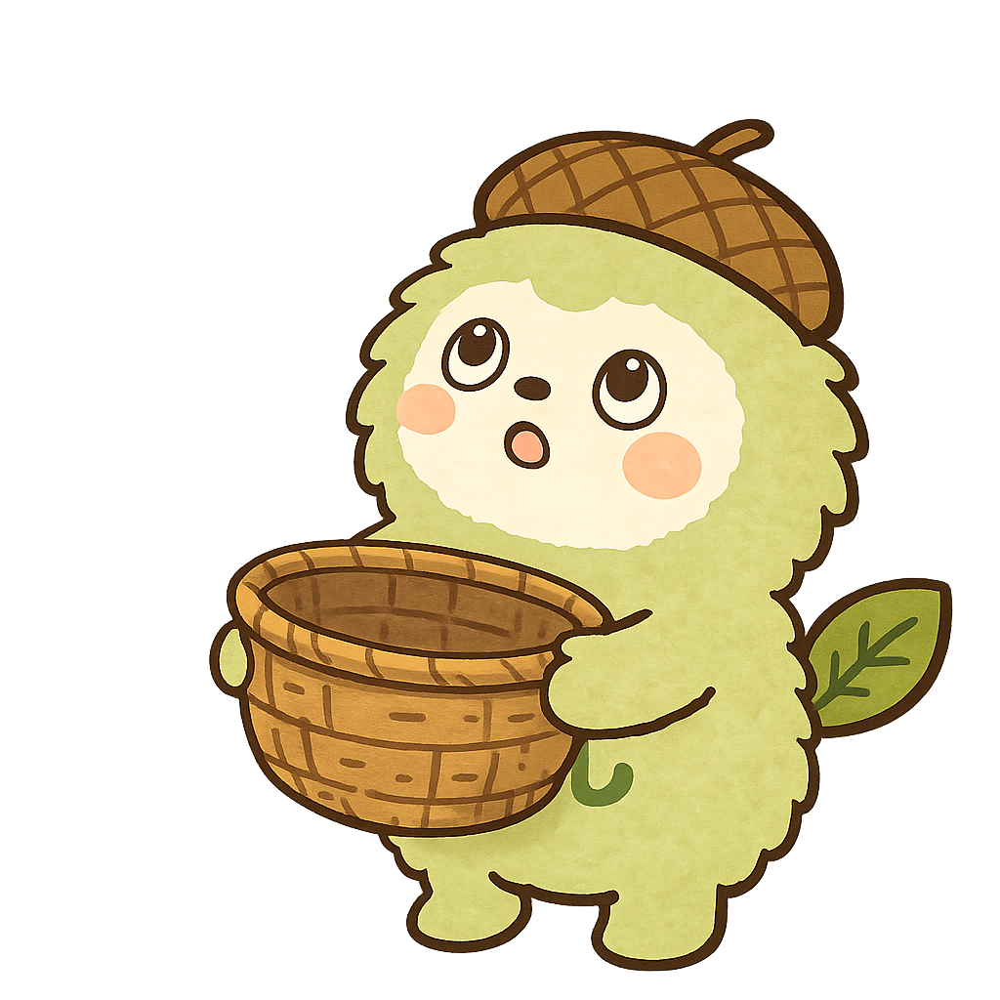

てんすう
0
もんだい
?
⏰
60
II

かんじゲーム
よみかたに あう 「かんじ」の
リンゴを つかまえよう！
がくねん
1ねん (かんたん)
2ねん
3ねん
4ねん (じゅくご)
5ねん (じゅくご)
6ねん (じゅくご)
はやさ
ふつう
ゆっくり
🎵 おとを ならす
スタート
げーむを えらぶ へ もどる
きゅうけい
ゲームを いちじちゅうだん しています
つづける
タイトルへ もどる
おしまい！
あなたのてんすう
0
すごい！
さいこうきろく:
0
もういっかい
タイトルへ もどる